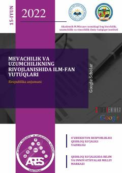

MVMeva va uzum yetishtirish bo'yicha ilmiy anjuman materiallari to'plami.
Bu kitob 2022-yil 15-iyunda Toshkentda o'tkazilgan respublika anjumani materiallari to'plamidir. Akademik M.Mirzaev nomidagi bog'dorchilik, uzumchilik va vinochilik ilmiy-tadqiqot instituti tomonidan tashkil etilgan anjumanda meva va uzum seleksiyasi, agrotexnologiyalar, mexanizatsiya, zararkunandalardan himoya va mahsulotlarni saqlash mavzulari muhokama qilingan. To'plamda qulupnay, meva va uzum yetishtirish bo'yicha ilmiy tadqiqot natijalari keltirilgan.